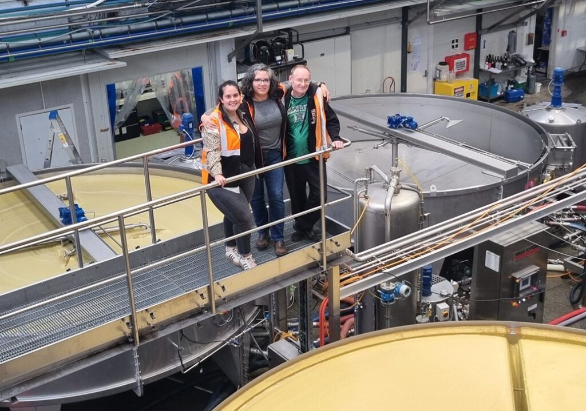
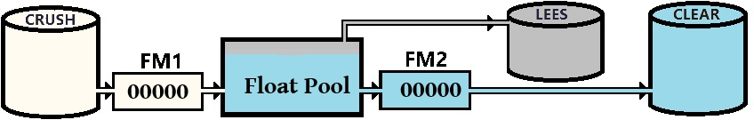
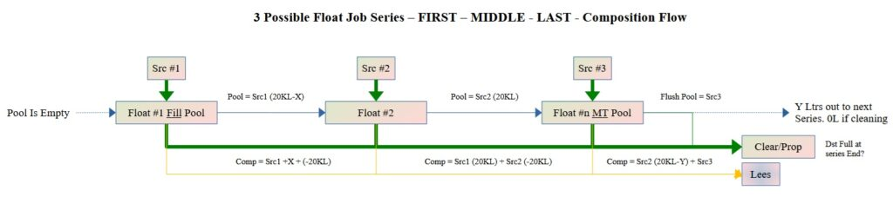
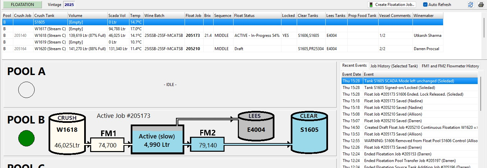
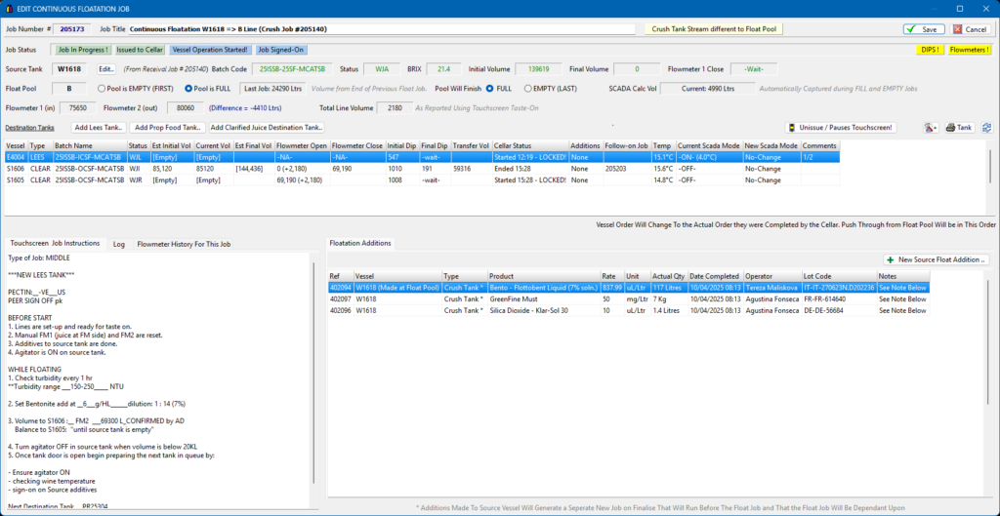
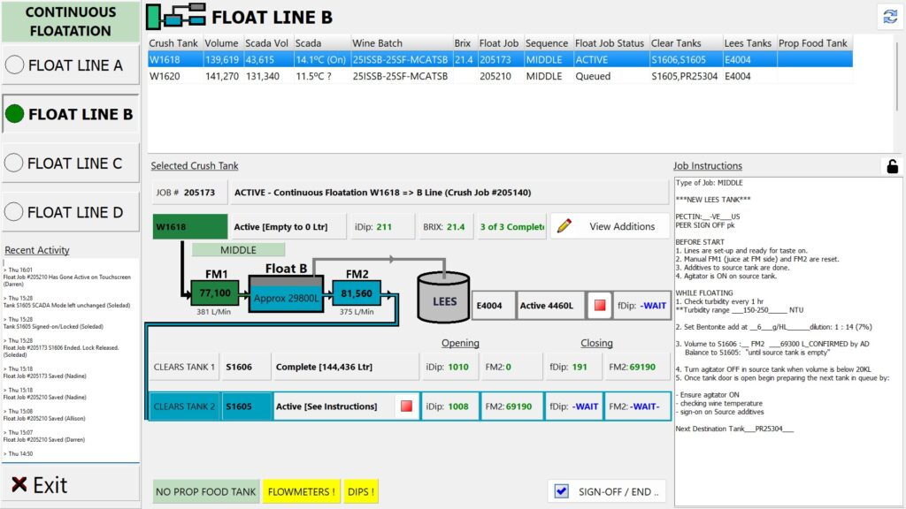

There are two common methods to clarify juice before it goes into fermentation. Firstly there is cold-settling, where you just leave the juice alone for several days and wait for the clear juice and lees (the juice particulates) to separate. Then there is floatation, where you add a processing agent (usually bentonite) and bubble a gas (nitrogen) through the juice and allow the particulates to rise to the top and the clear juice at the bottom. For big wineries, floatation is preferred as it reduces the long settling times (where juice may even begin to ferment before it is ready) and it produces a clearer juice faster.

Me, Allison (Winemaker) and Fran (transformation project manager) overlooking the Indevin Winery floatation system and three of its four float pools
This post will concentrate on this floatation process, or more specifically the continuous floatation process, and how your wine-making system should keep track of the composition. A very simplified diagram of this process is below. Where multiple Crush tanks with compatible juice are successively fed into the pool until the clear tank is full.

Note in the text below we might see reference to a propagation or “Prop” tank, this is just another clear tank with a different name and a different status and the procedure to get its composition is identical.
When processing just a single crush tank, we fill the float pool from the crush tank (yellow in picture), and once the pool is full we begin bubbling the gas through, collect the clarified juice from the bottom (blue in picture) into the clear tank, and the rest (the grey in the picture) is considered lees and goes to the lees tank where it is either further clarified to get a bit more juice or disposed of. Once the crush tank and float pool are empty we start again.
The problem with this (single) float is we have to stop the process to empty the pool, which can add some hours to the procedure. In a continuous floatation process when the first crush tank is emptied, we record the tank dips, and flowmeter readings, while the float pool is still full and change to a new crush tank and continue the process with minimal interruption, eventually after processing several similar crush tanks the last job empties the pool and the sequence restarts with the next batch.
Obviously with this continuous system it is still vital to keep track of the composition of the wine for food safety and regulatory requirements. Because the float pool is much smaller than the size of the crush tank we can make a couple of important assumptions verified by measurements:
- The juice volume left in the float pool from the last crush tank will be completely replaced by the juice from the next crush tank.
- The volume that goes into lees will be the crush volume minus the clear volume.
To work this into a system we need to be able to capture the volumes in and out of the pool, which we do using a flowmeter (FM1) on the inlet of the pool from the crush tank and another (FM2) on the clears line. There is no point in putting a flowmeter on the lees line, as the volume is mainly particulate and foam and confuses normal flowmeters which require liquids. Generally lees volume is 6% of the crush total, but this is an average based on an average juice, and there is no such thing as one vintage may produce differing results. So at the end of each crush tank we have
FM1 = Crush Volume
FM2 = Clear Volume
Lees Volume = FM1 - FM2The float pools also have a nominal (full) volume we work to and in practice the inflow and outflow is controlled to keep it at this volume throughout the process.
For the system we designed we split the continuous floatation into jobs based on the emptying of a crush tank. At the start of each job we will have the known start volumes of the crush and clear tank (via DIPs or otherwise) and our first action is to ensure both the flowmeters are reset so we can do the calculations. This I do quite easily as I already have a bi-directional service connecting the SCADA systems to MySQL (the Bulls-i RDBS) plus I keep my own counters for both flowmeter values independent of the values held in SCADA as these can be reset manually and I have been burnt many times by using other peoples data.
We have three possible types of continuous floatation jobs, the first where we fill the pool, then one or more middle jobs, and finally an end job where we flush the pool and this can be seen in a simple series of jobs below.

In the first job in the series where we fill that tank we only have one source “SRC #1” and all the juice volume will end up in either
- The Float Pool (at the Float pool fill volume)
- The Clear/Prop tanks (Volume Determined by FM2 and the Initial and Final Dips of the tanks)
- The Lees Tank (the remainder with the “dirty” juice)
This is a normal job, one-to-many and fits in nicely with the current winemaking job system.
For the middle job(s) in the series however it becomes a bit more complicated as we have two source vessels “SRC #2” and “Float Pool #1” and two or more destination vessels as per the previous case. This situation cannot be processed as a normal job which must be one-to-many, or many-to-one to create a composition. to fix this at the end of the job we need to create two jobs.
The first job is a prequel job to transfer (flush) the volume of “Float Pool #1” to the clear and the lees, this will also alter the volumes of the two tanks which we need to ensure are the start volumes of the second job. The second job is the same as the first job in the series where we again fill the pool from the source and have balances go to clear and lees.
The final job in the series where we empty the float pool again has two source tanks, but the only difference with this one is that at the end of the job, all the volume in the float pool is flushed out to the clear and lees vessels so ending the sequence.
In the Bulls-i system “Float Pool #1” is an asset, but it is NOT a tank. However as a programmer, I can bypass this restriction and so treat it as a virtual tank, giving it volume, batch-codes and a composition exactly like a normal vessel and knowing that at the end of the series it will be empty.
So not a difficult process when you break it down into steps.
There are two users of the system, the winemaker who creates the floatation jobs and decides on which tanks and float pools will be allocated, where they go in the sequence, and what additives if any need to be made. The other is the cellar-hand who operates the system and does the work on the winery floor, and who needs to see the current status of the job clearly and be able to enter information on a system to say which tanks are connected and their opening and closing volumes.

The winemaker part of this is shown above (for “Pool B”) Only one job can be active in a line, and we must have at least a FIRST (to fill the pool) and a LAST (to empty the pool) along with 1 or more MIDDLE jobs. The Winemaker job screen looks like below

This job translates onto the Cellar-hand operators touchscreen as below where we have a very limited number of options to start the job, make product additions to the tank/pool and start and end each tank in series. The operator screen will also require RFID confirmations from operators who have the qualification to do this. In this way the winemaker fills the operators work buffer and when the operator has finished and signed off the job it is returned to their office screen to complete.

All the flowmeter and SCADA volumes are captured and displayed real-time on the appropriate graphic on the screen to aid both the winemaker (sitting remotely in an office) and the operator doing the job. There are also a few additional toys we have added to this system to reproduce the four (RED/GREEN/YELLOW/FALSHING) LEDs from the program to real lights on the cellar floor.
Hopefully this brief introduction to automating a slightly more complicated production process will show what is possible.